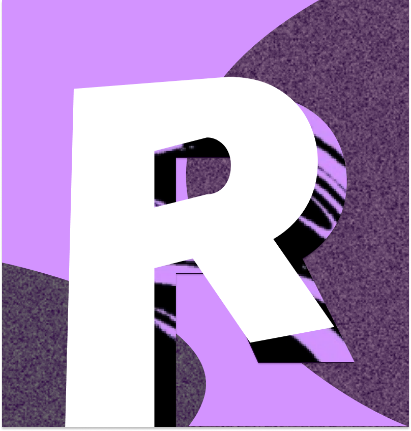

Relativism Media Studio

This is a homepage of the media developer studio named after a concept of total interconnection.
Originated in Saint Petersburg, we operate distributed work-threads to practice world-building in collective carpentry.
Here, we obtain ability to:
- Think of the personal experience happening to us;
- Process it accordingly to the collective training capacity and personal goals;
- Let other spectators get agency by improving their morale towards "being means-to-itself".
Here you can get to know our works.